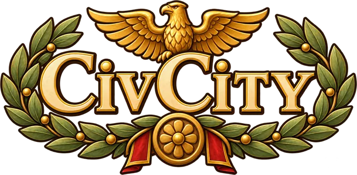
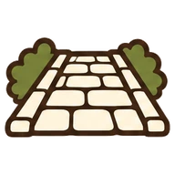
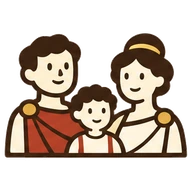
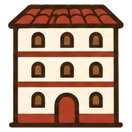

«Уютный Рим», Легион 2.0, друзья, арена и союзы
Город растёт спокойнее, большие здания живут, у семей — черты характера, времена года. Легион: поход 10 × 15 с боссами, новобранцы и вещи пяти редкостей. Друзья, подарки, арена и союзы.

Проложите первую улицу — и смотрите, как стоянка становится Вечным городом. Без поражений и спешки: вы строите, город отвечает жизнью.
Бесплатно · Установщик — около 100 МБ · Windows 10 и 11 · Mac — тестовая версия
CivCity — игра для компьютера с Windows или Mac. Откройте civcity.ru на компьютере, чтобы скачать её.
Четыре шага — и дальше город живёт сам.

Проложите дорогуУлица тянется мышью, как кисть.
Приедет семьяНовые жители въезжают через арку и селятся вдоль улицы.
Дом растёт этажамиЕсть еда, вода и красота рядом — дом счастлив, и вы надстраиваете этаж.
Всё снято прямо в игре.


Сцены оживают сами. Щелчок — пауза.
Здания Легиона стоят прямо в городе. Бой идёт сам — вы вовремя жмёте умения.


Бесплатно · Windows 10 и 11
Город сам сохраняется в облаке — продолжайте с любого компьютера. Аккаунт
| Что | Минимум | Рекомендуется |
|---|---|---|
| Система | Windows 10, 64-бит | Windows 11 |
| Процессор | 4 ядра, 2,5 ГГц | 6 ядер, 3 ГГц |
| Память | 8 ГБ | 16 ГБ |
| Видеокарта | GeForce GTX 960, Radeon RX 560 | GeForce GTX 1660, Radeon RX 5600 или новее |
| Или встроенная | Intel Iris Xe, Radeon 680M или мощнее — на «Очень низкой» графике | |
| Место | 1,5 ГБ на диске | |
| Интернет | Для входа и облачных сохранений | |
Графику игра при первом запуске выбирает сама, по видеокарте. Поменять её можно в настройках.
На Mac — есть тестовая версия. На телефоне пока нет.
Скорее всего, да: на встроенной видеокарте игра сама включит «Очень низкую» графику.
Игра переехала на новый сервер, и прежние учётные записи восстановить не удалось. Зарегистрируйтесь заново на ту же почту — город с вашего компьютера сам уйдёт в новое облако.
Только почту и ваш город. Сам пароль мы не храним. Подробно — в политике конфиденциальности.
Город растёт спокойнее, большие здания живут, у семей — черты характера, времена года. Легион: поход 10 × 15 с боссами, новобранцы и вещи пяти редкостей. Друзья, подарки, арена и союзы.